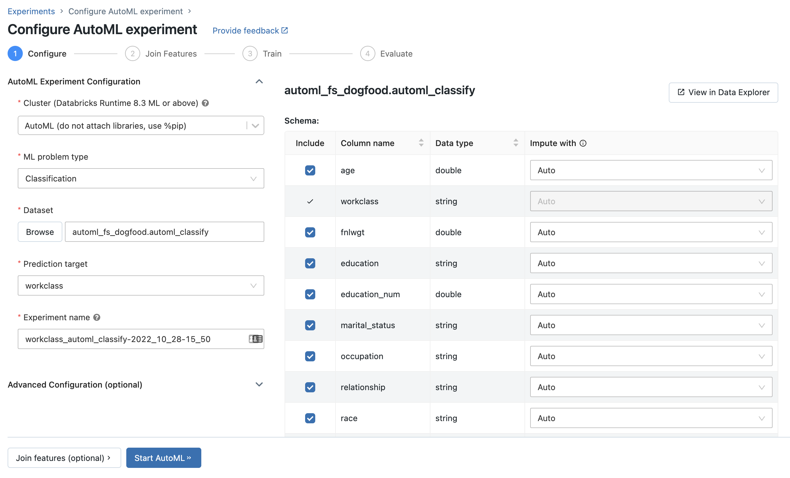
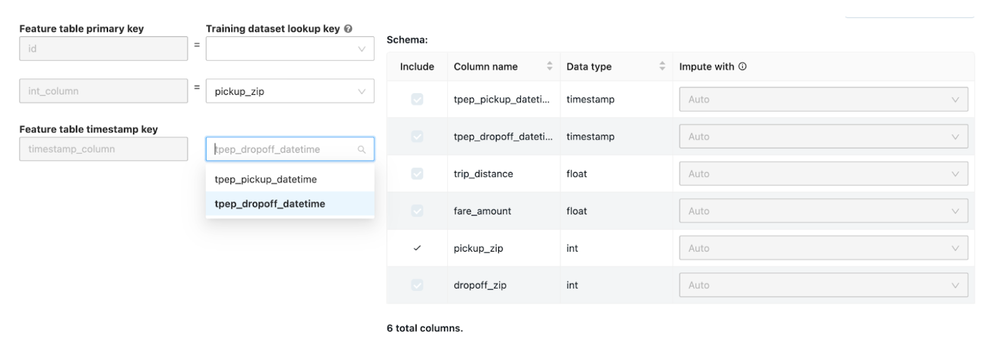

Train ML models with the Databricks AutoML UI
This article demonstrates how to train a machine learning model using AutoML and the Databricks Machine Learning UI. The AutoML UI steps you through the process of training a classification, regression or forecasting model on a dataset.
To access the UI:
In the sidebar, select New > AutoML Experiment.
You can also create a new AutoML experiment from the Experiments page.
The Configure AutoML experiment page displays. On this page, you configure the AutoML process, specifying the dataset, problem type, target or label column to predict, metric to use to evaluate and score the experiment runs, and stopping conditions.
Requirements
See Requirements for AutoML experiments.
Set up classification or regression problems
You can set up a classification or regression problem using the AutoML UI with the following steps:
In the Compute field, select a cluster running Databricks Runtime ML.
From the ML problem type drop-down menu, select Regression or Classification. If you are trying to predict a continuous numeric value for each observation, such as annual income, select regression. If you are trying to assign each observation to one of a discrete set of classes, such as good credit risk or bad credit risk, select classification.
Under Dataset, select Browse.
Navigate to the table you want to use and click Select. The table schema appears.
For classification and regression problems only, you can specify which columns to include in training and select custom imputation methods.
Click in the Prediction target field. A drop-down appears listing the columns shown in the schema. Select the column you want the model to predict.
The Experiment name field shows the default name. To change it, type the new name in the field.
You can also:
Set up forecasting problems
You can set up a forecasting problem using the AutoML UI with the following steps:
In the Compute field, select a cluster running Databricks Runtime 10.0 ML or above.
From the ML problem type drop-down menu, select Forecasting.
Under Dataset, click Browse. Navigate to the table you want to use and click Select. The table schema appears.
Click in the Prediction target field. A dropdown menu appears listing the columns shown in the schema. Select the column you want the model to predict.
Click in the Time column field. A drop-down appears showing the dataset columns that are of type
timestampordate. Select the column containing the time periods for the time series.For multi-series forecasting, select the column(s) that identify the individual time series from the Time series identifiers drop-down. AutoML groups the data by these columns as different time series and trains a model for each series independently. If you leave this field blank, AutoML assumes that the dataset contains a single time series.
In the Forecast horizon and frequency fields, specify the number of time periods into the future for which AutoML should calculate forecasted values. In the left box, enter the integer number of periods to forecast. In the right box, select the units. .. note :: To use Auto-ARIMA, the time series must have a regular frequency (that is, the interval between any two points must be the same throughout the time series). The frequency must match the frequency unit specified in the API call or in the AutoML UI. AutoML handles missing time steps by filling in those values with the previous value.
In Databricks Runtime 10.5 ML and above, you can save prediction results. To do so, specify a database in the Output Database field. Click Browse and select a database from the dialog. AutoML writes the prediction results to a table in this database.
The Experiment name field shows the default name. To change it, type the new name in the field.
You can also:
Use existing feature tables from Databricks Feature Store
In Databricks Runtime 11.3 LTS ML and above, you can use feature tables in Databricks Feature Store to expand the input training dataset for your classification and regression problems.
In Databricks Runtime 12.2 LTS ML and above, you can use feature tables in Databricks Feature Store to expand the input training dataset for all of your AutoML problems: classification, regression, and forecasting.
To create a feature table, see Create a feature table in Unity Catalog or Create a feature table in Databricks Feature Store.
After you finish configuring your AutoML experiment, you can select a features table with the following steps:
Click Join features (optional).
On the Join Additional Features page, select a feature table in the Feature Table field.
For each Feature table primary key, select the corresponding lookup key. The lookup key should be a column in the training dataset you provided for your AutoML experiment.
For time series feature tables, select the corresponding timestamp lookup key. Similarly, the timestamp lookup key should be a column in the training dataset you provided for your AutoML experiment.
To add more feature tables, click Add another Table and repeat the above steps.
Advanced configurations
Open the Advanced Configuration (optional) section to access these parameters.
The evaluation metric is the primary metric used to score the runs.
In Databricks Runtime 10.3 ML and above, you can exclude training frameworks from consideration. By default, AutoML trains models using frameworks listed under AutoML algorithms.
You can edit the stopping conditions. Default stopping conditions are:
For forecasting experiments, stop after 120 minutes.
In Databricks Runtime 10.5 ML and below, for classification and regression experiments, stop after 60 minutes or after completing 200 trials, whichever happens sooner. For Databricks Runtime 11.0 ML and above, the number of trials is not used as a stopping condition.
In Databricks Runtime 10.1 ML and above, for classification and regression experiments, AutoML incorporates early stopping; it stops training and tuning models if the validation metric is no longer improving.
In Databricks Runtime 10.1 ML and above, you can select a time column to split the data for training, validation, and testing in chronological order (applies only to classification and regression).
In the Data directory field, you can enter a DBFS location where the training dataset is saved. If you leave the field blank, the training dataset is saved as an MLflow artifact.
Column selection
Note
This functionality is only available for classification and regression problems
In Databricks Runtime 10.3 ML and above, you can specify which columns AutoML should use for training. To exclude a column, uncheck it in the Include column.
You cannot drop the column selected as the prediction target or as the time column to split the data.
By default, all columns are included.
Imputation of missing values
In Databricks Runtime 10.4 LTS ML and above, you can specify how null values are imputed. In the UI, select a method from the drop-down in the Impute with column in the table schema.
By default, AutoML selects an imputation method based on the column type and content.
Note
If you specify a non-default imputation method, AutoML does not perform semantic type detection.
Run the experiment and monitor the results
To start the AutoML experiment, click Start AutoML. The experiment starts to run, and the AutoML training page appears. To refresh the runs table, click .
From this page, you can:
Stop the experiment at any time.
Open the data exploration notebook.
Monitor runs.
Navigate to the run page for any run.
With Databricks Runtime 10.1 ML and above, AutoML displays warnings for potential issues with the dataset, such as unsupported column types or high cardinality columns.
Note
Databricks does its best to indicate potential errors or issues. However, this may not be comprehensive and may not capture issues or errors for which you may be searching. Please make sure to conduct your own reviews as well.
To see any warnings for the dataset, click the Warnings tab on the training page, or on the experiment page after the experiment has completed.
When the experiment completes, you can:
Register and deploy one of the models with MLflow.
Select View notebook for best model to review and edit the notebook that created the best model.
Select View data exploration notebook to open the data exploration notebook.
Search, filter, and sort the runs in the runs table.
See details for any run:
The generated notebook containing source code for a trial run can be found by clicking into the MLflow run. The notebook is saved in the Artifacts section of the run page. You can download this notebook and import it into the workspace, if downloading artifacts is enabled by your workspace administrators.
To view results of the run, click in the Models column or the Start Time column. The run page appears showing information about the trial run (such as parameters, metrics, and tags) and artifacts created by the run, including the model. This page also includes code snippets that you can use to make predictions with the model.
To return to this AutoML experiment later, find it in the table on the Experiments page. The results of each AutoML experiment, including the data exploration and training notebooks, are stored in a databricks_automl folder in the home folder of the user who ran the experiment.
Register and deploy a model
You can register and deploy your model with the AutoML UI:
Select the link in the Models column for the model to register. When a run completes, the best model (based on the primary metric) is the top row.
Select to register the model in Model Registry.
Select
 Models in the sidebar to navigate to the Model Registry.
Models in the sidebar to navigate to the Model Registry.Select the name of your model in the model table. The registered model page displays.
From the registered model page, you can serve the model with Model Serving.
No module named ‘pandas.core.indexes.numeric
When serving a model built using AutoML with Model Serving, you may get the error: No module named 'pandas.core.indexes.numeric.
This is due to an incompatible pandas version between AutoML and the model serving endpoint environment. You can resolve this error by running the add-pandas-dependency.py script. The script edits the requirements.txt and conda.yaml for your logged model to include the appropriate pandas dependency version: pandas==1.5.3
Modify the script to include the
run_idof the MLflow run where your model was logged.Re-registering the model to the MLflow model registry.
Try serving the new version of the MLflow model.